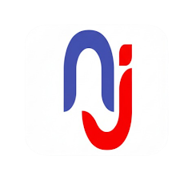
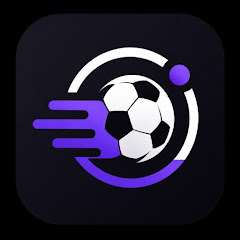

MOBILE / JOB DISCOVERY
NGOJobSite NGO and nonprofit opportunities from a WordPress API, with local bookmarks, sharing and rich job descriptions.
Google Play ↗
MOBILE / SPORTS
Live Football Score Live scores, fixtures, standings, lineups and match events. Built with Flutter and a Cloudflare Worker proxy for the football data API.
Google Play ↗
NLP / EXPERIMENTS
Humour detection
Text classification experiments with FastText embeddings and logistic regression, alongside an LDA/CNN–BiLSTM variant.
Repository ↗
COMPUTER VISION
Plant disease classification
Convolutional neural network experiments for classifying crop diseases from images using Python and TensorFlow.
Repository ↗
COMPUTER VISION
Steel surface defect detection
A YOLO-based project for identifying and classifying surface defects in steel, using Python and Ultralytics.
Repository ↗
ML / DATA APPLICATION
Crop disease and pest dashboard
A Streamlit dashboard for exploring crop disease and pest classification results, using TensorFlow, scikit-learn and MongoDB Atlas.
Repository ↗
ML / FLASK
Hearing test classification
A web application for classifying hearing test results, with data preprocessing and supervised learning using scikit-learn.
Repository ↗
DOCUMENT PROCESSING
Paddle OCR
A web application that extracts text from images and PDF documents using PaddleOCR.
Repository ↗
SECURITY / FLASK
File encryption and decryption
A Flask application with a web interface for file encryption and decryption using Python cryptography libraries.
Repository ↗
SPEECH / ACCESSIBILITY
AI note taker
A mobile speech-to-text and summarisation project exploring Whisper and VOSK, long-form transcription and educational accessibility.
Repository ↗
ADDITIONAL MOBILE WORK
Everyday mobile tools
Additional work includes NGO Procurement & Contracts, MediaCompress: Image and Video, and FlipBlitz: Flip, Match and Win, alongside mobile releases and maintenance at OmegaPi Technologies.
 Flutter
Flutter FastAPI
FastAPI